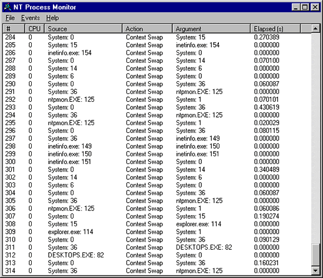

PMon is a Windows NT device driver/GUI combination that logs and displays all process activity on a Windows NT 4.0 system. The device driver uses several undocumented hooking functions that cause it to be called whenever a process or thread is created or deleted. In addition, if run on the Checked build of NT or the Multiprocessing kernel, an undocumented context-swap hook is installed that has PMon optionally display all context switch activity.
PMon works on all builds of NT 4.0. Installing PMon is as easy as unzipping it and typing, "ntpmon." The GUI dynamically loads the driver (based on code from the instdrv sample in the Windows NT DDK), which installs hooks for process and thread creation and deletion. The menus can be used to disable event capturing, control the scrolling of the listview, and to save the listview contents to an ASCII file. Where possible, PMon displays the name of the process that owns a thread that is part of a thread creation or deletion, or a context swap. The thread ID immediately follows the process name. In some cases the owning process does not exist anymore, in which case PMon displays "???" for the name. The "Elapsed" column indicates the time in seconds between successive events in the display. Note that many times this will be 0, which simply means that the events happened inside of one system timer clock tick. Clock ticks are normally 10 milliseconds apart, so alot can happen (for more information on the NT system timer, see Inside NT High Resolution Timers).
The context-swap hook is only present in multiprocessor builds of NT, and is by default not enabled. To turn on context-switch monitoring when it is present, select the "Context Swap" menu entry under the "Events" menu. Note that monitoring context swaps generates many records rapidly. In order to try and minimize the amount of non-interesting context-swap noise, PMon ignores swaps between system threads 0 and 1, which occur frequently as system work items are dispatched.
If you have MSDN membership, you have the checked build. You can install a minimal checked build environment by replacing NTOSKRNL.EXE with the NTOSKRNL.EXE on the checked build CD, and by replacing HAL.DLL with the appropriate version on the checked build. To determine the correct HAL to copy over to your system, search for HAL.DLL in its [winnt]\repair\setup.log file. Copy the one with the same name on the checked CD to HAL.DLL in your [winnt]\system32 directory. Be sure and back up your existing copies of these files so that you can go back to the free build.
